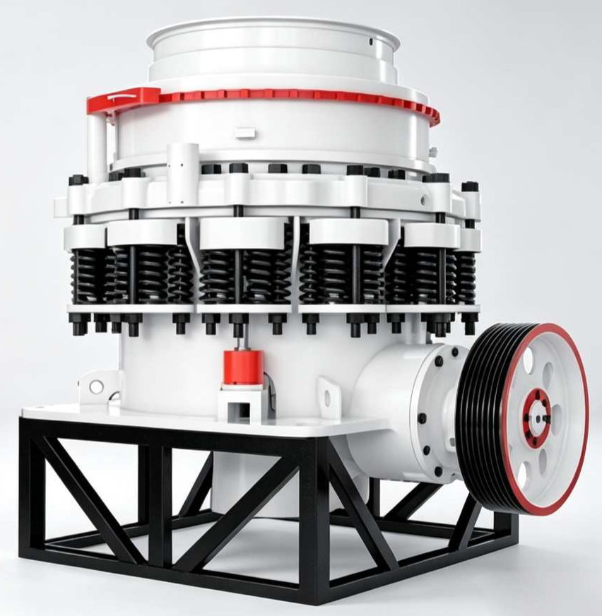

Product GalleryProduct Gallery

HP Series Overall Appearance
HP Series Hydraulic System & Structure Display
The HP Series Hydraulic Cone Crusher, developed with German technology, is a world-class high-energy cone crusher. Using the laminated crushing principle, the moving cone performs conical pendulum motion driven by the eccentric sleeve, with material being crushed through multipleextrusion and bending cycles between the moving and fixed cones. Four models: HPC-200/300/400/500, with C (coarse cavity) and F (fine cavity) dual cavity options, covering 55-700 t/h for efficient medium, fine, and ultra-fine crushing. The intelligent hydraulic adjustment system is easy to operate, making it a next-generation replacement for spring cone crushers and ordinary hydraulic cone crushers, ideal for large stone plants and mining crushing.

HP Series Overall Appearance
HP Series Hydraulic System & Structure Display
The HP Series Hydraulic Cone Crusher (HPC Series) is a high-energy cone crusher developed with advanced German crushing technology combined with domestic mining conditions. Compared to traditional spring cone crushers, the HP series uses hydraulic cylinders instead of spring sets for overload protection and discharge opening adjustment, offering faster response and higher adjustment precision. Core components include the main frame, eccentric sleeve, moving cone assembly, fixed cone liner, hydraulic adjustment system, and lubrication system. The moving cone, driven by the eccentric sleeve, performs conical pendulum motion around a fixed point — forming a wedge-shaped crushing chamber between the moving and fixed cones where material is crushed underextrusion and bending stress. The HP series uses the laminated crushing principle, with material receiving multiple compressions in the chamber. Crushing force is transmitted through the material layer with inter-particle crushing ("rock-on-rock" effect), resulting in excellent product shape (high cubicity, low flakiness) with uniform liner wear and high utilization. The full series covers 4 mainframes: HPC-200 (160kW, 13t), HPC-300 (220kW, 19t), HPC-400 (315kW, 26t), and HPC-500 (400kW, 33t), each with C-type (coarse) and F-type (fine) cavity options for different feed and discharge size requirements.
The motor drives the horizontal shaft and bevel gear pair through a V-belt, rotating the eccentric sleeve around the main shaft. The moving cone main shaft is inserted into the tapered bore of the eccentric sleeve. As the eccentric sleeve rotates, the moving cone performs conical pendulum motion around a fixed suspension point, periodically approaching and retreating from the fixed cone liner. The swing frequency is 300-400 rpm.
Material falls from the top feed opening into the wedge-shaped crushing chamber between the moving and fixed cones. As the moving cone approaches the fixed cone, the chamber volume gradually decreases, and material is strongly squeezed and bent. The HP series uses the laminated crushing principle — material is notDirectly the crushing wall "smashed," but rather experiences inter-particleextrusion and friction throughout the entire material layer (inter-particle crushing), with multiple compression-release cycles in the chamber.
The instant the moving cone retreats from the fixed cone, material crushed to smaller than the discharge opening size is discharged from the chamber bottom by gravity. The HP series is equipped with a hydraulic adjustment system that changes the moving cone suspension height via hydraulic cylinders to adjust the discharge opening size (6-13mm). Equipped with automatic iron release protection — when uncrushable objects (iron blocks, etc.) enter the crushing chamber, the hydraulic cylinder automatically releases pressure, allowing the moving cone to drop and pass the object, then automatically resets after discharge.
Large feed opening, discharge 13mm, suitable for medium crushing. Feed size 150-320mm, capacity 120-700 t/h. Typically used for secondary crushing after jaw crusher.
Smaller feed opening, discharge 6mm, suitable for fine and ultra-fine crushing. Feed size 76-110mm, capacity 55-430 t/h. Typically used for tertiary crushing before sand making.
| Model | Moving Cone Dia. (mm) | Cavity Type | Feed Opening (mm) | Discharge Opening (mm) | Capacity (t/h) | Motor power (kW) | Weight (t) |
|---|---|---|---|---|---|---|---|
| HPC-200 | 950 | C Coarse | 150 | 13 | 120-240 | 160 | 13 |
| F Fine | 76 | 6 | 55-180 | ||||
| HPC-300 | 1160 | C Coarse | 225 | 13 | 150-430 | 220 | 19 |
| F Fine | 86 | 6 | 90-260 | ||||
| HPC-400 | 1400 | C Coarse | 290 | 13 | 190-610 | 315 | 26 |
| F Fine | 100 | 6 | 108-320 | ||||
| HPC-500 | 1500 | C Coarse | 320 | 13 | 230-700 | 400 | 33 |
| F Fine | 110 | 6 | 145-430 |
※ Capacity based on medium-hard limestone (≤160MPa). C type for medium crushing (secondary), F type for fine crushing (tertiary). Discharge adjustable within ±2mm via hydraulic system. Specifications subject to change without notice.
| Component | Function | Material / Features |
|---|---|---|
| Main Frame Assembly | Cast steel integral frame (welded structure for large models). Upper section mounts the fixed cone liner and adjustment ring; interior supports the main shaft and eccentric sleeve. Frame mustWithstand huge crushing forces (HPC-500 peak force up to 600 tons). Large castings undergo annealing stress relief to ensure deformation-free long-term operation | ZG270-500 cast steel / Q345B welded |
| Moving Cone & Fixed Cone Liners | Core wear parts in direct contact with material. Moving cone liner fits over the moving cone body; fixed cone liner is mounted on the adjustment ring inner wall. A wedge-shaped crushing chamber is formed between the two liners. Liner surfaces feature special crushing tooth profiles — C-type flat teeth, F-type medium or fine teeth for different crushing stages | ZGMn18Cr2 high manganese steel |
| Eccentric Sleeve & Main Shaft | The eccentric sleeve is driven to rotate by the small bevel gear on the horizontal shaft. Its eccentric bore causes the moving cone to produce pendulum motion. The main shaft supports the moving cone suspension, hung from the upper cross beam of the frame through a spherical bearing seat. Main shaft and eccentric sleeve fitPrecision IT6 grade, ensuring stable moving cone trajectory | 42CrMo main shaft + bronze/babbitt eccentric sleeve |
| Hydraulic Adjustment & Iron Release System | Core advantage component of the HP series. Hydraulic cylinder installed at the bottom of the main shaft; changes moving cone height via oil supply from the hydraulic station to adjust discharge opening size with ±0.5mmPrecision. During iron overload, the hydraulic cylinder rapidly releases pressure, allowing the moving cone to drop and pass the iron block, then automatically resets. Hydraulic station equipped with accumulator, response time <0.3 seconds | High-pressure hydraulic cylinder + nitrogen accumulator |
| Drive & Transmission System | Motor drives the horizontal shaft through a V-belt, which drives the eccentric sleeve through spiral bevel gears. Large models use hydraulic couplers or VFD soft start to reduce starting current impact. Gear pair lubricated in enclosed oil bath, equipped with oil temperature, pressure, and flow sensors for real-time monitoring | 4P/6P motor + spiral bevel gear pair |
| Lubrication & Cooling System | Independent thin oil circulating lubrication system. Oil pump delivers oil from tank to the main shaft spherical bearing, eccentric sleeve, and bevel gear pair; return oil is cooled through a cooler before recirculation. Equipped with three-parameter interlock protection (oil temperature, pressure, flow) — automatic alarm or shutdown if any parameter exceeds limits | Gear pump + air-cooled/water-cooled radiator |
Inter-particleextrusion and friction within the material layer produces product shape close to cubic, with flaky content <8% (far lower than jaw and impact crushers). Laminated crushing also has the highest crushing force utilization efficiency, with 15-25% lower energy consumption per ton than other crushing methods.
Discharge opening size is adjusted with one button through the hydraulic system, accuracy ±0.5mm, no need to stop and manually adjust shims. Equipped with PLC intelligent control system for real-time monitoring of discharge opening, motor current, oil temperature, and oil pressure, with automatic alarm on parameter exceedance. Remote monitoring module optional for real-time equipment status viewing on mobile devices.
When uncrushable objects such as shovel teeth or drill bits enter the crushing chamber, the hydraulic cylinder automatically releases pressure in <0.3 seconds, the moving cone drops to allow the object to pass, and instantly resets after discharge. Compared to mechanical overload in spring cone crushers, hydraulic iron release responds faster with impact-free reset, without the risk of spring breakage or frame cracking common in spring crushers during iron overload.
By changing the cavity liners on the same mainframe, the crushing stage can be switched: C-type coarse cavity feed 150-320mm for medium crushing (secondary), F-type fine cavity feed 76-110mm for fine/ultra-fine crushing (tertiary). Purchasing one HPC mainframe is equivalent to having both coarse and fine crushing capabilities, with extremely high investment efficiency.
Laminated crushing ensures uniform liner wear. High manganese steel liners continuously work-harden under impact (surface hardness HB 200→500+), with a single set of liners lasting 800-2000 hours. Liner replacement is assisted by the hydraulic system; changing a full set of liners on HPC-300 takes only 4-6 hours of downtime.
Compact structure with small footprint. HPC-500 (33t) achieves 700 t/h capacity with only 0.015 m²/t footprint. Lubrication and hydraulic systems are fully enclosedCirculation with no oil leakage pollution. Thin oil circulating lubrication noise is lower than open gear drive systems, meeting green mine construction requirements.
In secondary (medium) and tertiary (fine) crushing of metal ores such as iron, copper, and gold, the HP series is the standardConfiguration. HPC-400/500 (315-400kW) handles 190-700 t/h of metal ore, replacing traditional spring cone crushers with 30-50% capacity improvement. Hydraulic iron release protection is especially important in mining operations, effectively preventing damage from shovel teeth and other foreign objects.
In secondary and tertiary crushing sections of large commercial aggregate lines (annual output over 1 million tons), the HP series laminated crushing produces aggregate with excellent shape, high cubicity, and low flakiness content, meeting strict concrete aggregate shape requirements for highways, high-speed rail, and high-rise buildings. An ideal replacement when impact crusher gradation is unsatisfactory.
Medium and fine crushing of non-metal minerals such as limestone, dolomite, granite, basalt, and river pebbles. HPC-200/300 (160-220kW) suits medium-sized processing plants. The F-type fine cavity can crush material to <6mm for feeding to sand makers or mills, forming an efficient "cone crusher + sand maker" combined sand-making process.
Large cement plants use HPC-400/500 as secondary crushing equipment for limestone raw material. The C-type coarse cavity can crush 200-300mm material from jaw crusher to below 13mm, directly feeding vertical mills or ball mills. The hydraulic adjustment system allows operators to adjust feed particle size in real-time based on mill conditions, optimizing grinding efficiency.
Need Cone Crusher? Contact us for selection advice and quote